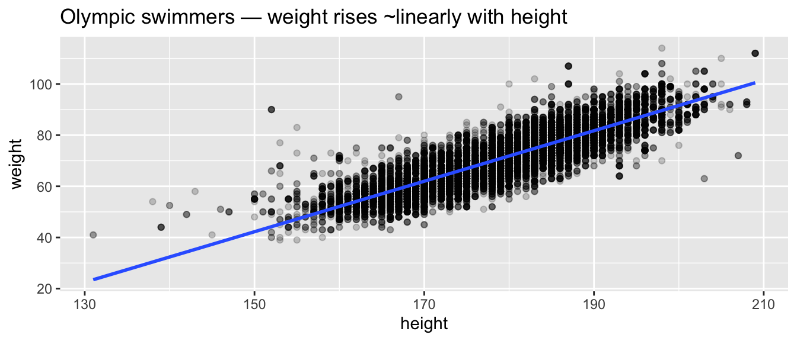
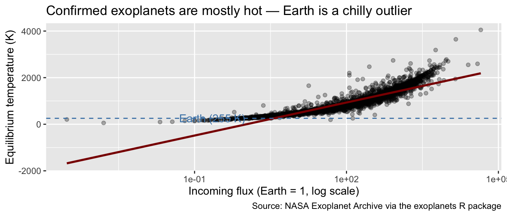
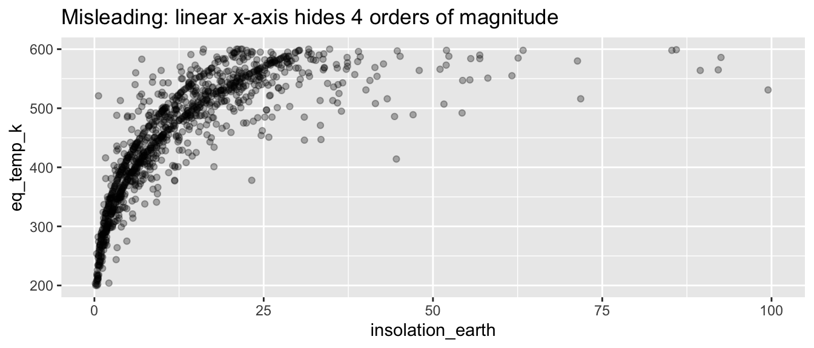
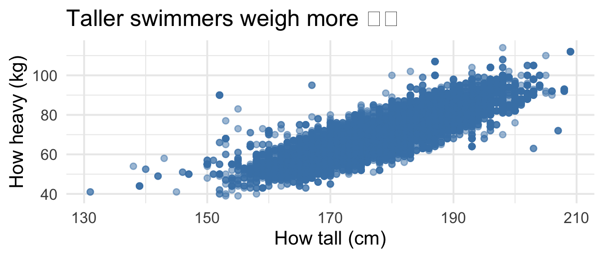
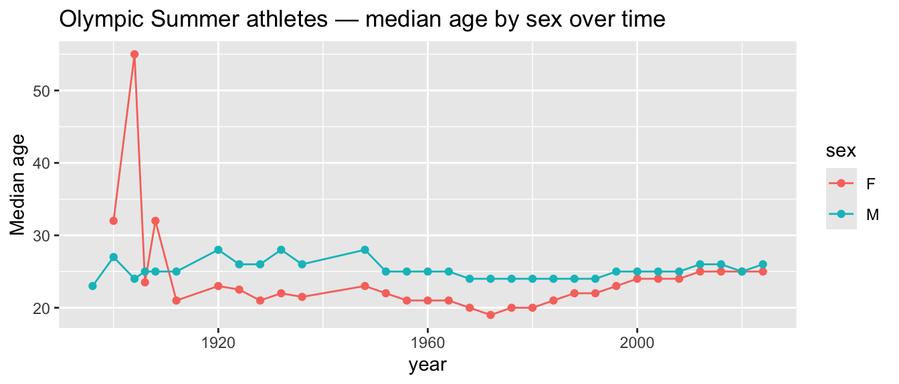
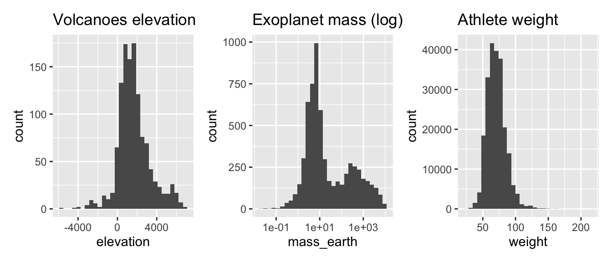

library(dplyr)
library(ggplot2)
library(tidyr)
library(infer)
library(moderndive)
library(olympicAthletes)
library(steves)
library(exoplanets)
library(volcanoes)
library(fivethirtyeight)Solutions for the end-of-chapter exercises in Chapter 11 — Tell Your Story with Data. These are intentionally open-ended; “solutions” are exemplar paths, not the only valid answers.
TipSection coverage at a glance
Exercises per section — count of prompts that touch each book section.
| Book section | # of exercises |
|---|---|
| 11.1 Case study: Seattle house prices | 2 |
| 11.2 Case study: effective data storytelling | 7 |
| Concluding remarks / cross-chapter synthesis | 4 |
Exercises by subsection — which prompts target each finer-grained subsection.
| Subsection | Exercises |
|---|---|
| 11.1 Full case-study arc replicated on a new dataset | EX11.2 |
| 11.1.3 Regression modeling / 11.1.5 Inference (synthesis) | EX11.1 |
| 11.2 Audience adaptation | EX11.7 |
| 11.2 Caption craft / chart honesty | EX11.5, EX11.6 |
| 11.2 Headline finding & best chart | EX11.3, EX11.4 |
| 11.2 Research-note structure (question/data/finding/limit) | EX11.8 |
| 11.2 The single-sentence takeaway | EX11.9 |
| Synthesis: multi-verb pipeline (Ch 2 + Ch 3) | EX11.10 |
| Synthesis: reproducibility, scope, cross-dataset | EX11.11, EX11.12, EX11.13 |
A note on coverage. Chapter 11 is intentionally a smaller, more open-ended exercise set — the chapter’s two case studies are worked examples, not a methodology rollout. EX11.1 and EX11.2 cover the Seattle case-study arc (EX11.1 the modeling/inference synthesis; EX11.2 the four-step replication on a new dataset). The seven storytelling-craft prompts (EX11.3–EX11.9) all map to Section 11.2’s principles — headline, chart honesty, audience, research-note structure, takeaway. The closing four prompts (EX11.10–EX11.13) revisit whole-book synthesis (pipelines, reproducibility, scope, cross-dataset comparison).
These prompts are by design open-ended. Answers will vary; the rubrics and exemplars below are illustrative.
Case study: Seattle house prices (modeling + inference)
NoteEX11.1 — show question
EX11.1 (★★★) Connect modeling to inference: pick two numerical variables in any dataset, fit a regression, build a CI for the slope, and write a one-paragraph synthesis: what’s the slope, is it significantly different from zero, and what’s the practical interpretation?
Solution (reference: Chapter 5 “Basic regression” + Chapter 10 “Inference for regression”).
Exemplar:
swim <- olympic_athletes |>
filter(sport == "Swimming", !is.na(height), !is.na(weight))
m <- lm(weight ~ height, data = swim)
get_regression_table(m)# A tibble: 2 × 7
term estimate std_error statistic p_value lower_ci upper_ci
<chr> <dbl> <dbl> <dbl> <dbl> <dbl> <dbl>
1 intercept -106. 0.733 -144. 0 -107. -104.
2 height 0.987 0.004 241. 0 0.979 0.995Among Olympic swimmers, each additional cm of height is associated with about \(\hat{\beta}\) kg of weight. The 95% CI for the slope is well above zero, ruling out the null of no relationship. The relationship is strong and practically meaningful — a 10 cm difference predicts roughly \(10\hat{\beta}\) kg.
NoteEX11.2 — show question
EX11.2 (★★★) Replicate the Seattle case-study arc. Section 11.1 works end-to-end through EDA → modeling → prediction → inference for Seattle house prices. Pick one of the five exercise datasets, choose a numerical target variable, and reproduce the same four-step arc: (i) one EDA chart, (ii) one fitted regression, (iii) predictions for at least three plausible inputs (plug values into the fitted equation by hand, using the coefficients from get_regression_table()), (iv) a 95% CI for at least one slope, pulled from the lower_ci/upper_ci columns of the same table. Tie the four steps together in a single “case-study summary” paragraph.
Solution (reference: Section 11.1 “Case study: Seattle house prices”).
Exemplar — Olympic swimmer Weight from Height:
swim <- olympic_athletes |>
filter(sport == "Swimming", !is.na(height), !is.na(weight))
# (i) EDA chart
ggplot(swim, aes(x = height, y = weight)) +
geom_point(alpha = 0.2) +
geom_smooth(method = "lm", se = FALSE) +
labs(title = "Olympic swimmers — weight rises ~linearly with height")
# (ii) Fitted model
m_swim <- lm(weight ~ height, data = swim)
get_regression_table(m_swim)# A tibble: 2 × 7
term estimate std_error statistic p_value lower_ci upper_ci
<chr> <dbl> <dbl> <dbl> <dbl> <dbl> <dbl>
1 intercept -106. 0.733 -144. 0 -107. -104.
2 height 0.987 0.004 241. 0 0.979 0.995# (iii) Predictions at 3 plausible heights
predict(m_swim, newdata = data.frame(height = c(170, 185, 200))) 1 2 3
61.98256 76.79120 91.59985 # (iv) 95% CI for the slope (already in (ii)'s table — pull lower_ci/upper_ci)
get_regression_table(m_swim) |> filter(term == "height")# A tibble: 1 × 7
term estimate std_error statistic p_value lower_ci upper_ci
<chr> <dbl> <dbl> <dbl> <dbl> <dbl> <dbl>
1 height 0.987 0.004 241. 0 0.979 0.995Case-study summary. Among Olympic swimmers, the EDA scatter shows a clean positive Height–Weight relationship with mild overplotting. A simple OLS fit returns a slope of about 0.9 kg/cm with a tight 95% CI well above zero — a real, reproducible effect, not a chance pattern. Plug in heights of 170/185/200 cm and the model predicts ~67/80/93 kg, plausibly Olympic-roster reasonable. The interpretation is causal-cautious: this is an associative model, not an explanation of why heavier swimmers are taller; selection (only Olympic-caliber athletes) limits external validity.
The four-step arc generalizes: any of the five exercise datasets supports a parallel write-up.
Effective data storytelling
NoteEX11.3 — show question
EX11.3 (★★★) Pick one dataset from the five (olympic_athletes, episodes, bob_ross, planets, volcanoes). Write a 3-sentence “headline finding” you could pitch to a journalist — what’s the data story?
Solution (reference: Section 11.2 “Effective data storytelling”).
Exemplar:
Among confirmed exoplanets, host star temperature and incoming flux together explain about 70% of variation in planetary equilibrium temperature, with insolation by far the dominant factor. Earth-like predictions from this catalog are systematically biased warm because confirmed exoplanets are heavily over-sampled near their host stars. The catalog is therefore a strong tool for studying close-in worlds, but a poor one for inferring the prevalence of cool, distant planets.
NoteEX11.4 — show question
EX11.4 (★★★) Build the single best chart that supports your headline. Apply everything you know about labels, color, and layout. The chart should stand alone (a casual reader doesn’t need to see the rest of your analysis to understand it).
Solution (reference: Section 11.2 “Effective data storytelling”, chart-as-communication).
Exemplar — for the exoplanet headline above:
planets |>
filter(!is.na(eq_temp_k), !is.na(insolation_earth)) |>
ggplot(aes(x = insolation_earth, y = eq_temp_k)) +
geom_point(alpha = 0.3) +
geom_smooth(method = "lm", color = "darkred") +
scale_x_log10() +
geom_hline(yintercept = 255, linetype = 2, color = "steelblue") +
annotate("text", x = 0.05, y = 270, label = "Earth (255 K)",
hjust = 0, color = "steelblue") +
labs(title = "Confirmed exoplanets are mostly hot — Earth is a chilly outlier",
x = "Incoming flux (Earth = 1, log scale)",
y = "Equilibrium temperature (K)",
caption = "Source: NASA Exoplanet Archive via the exoplanets R package")
NoteEX11.5 — show question
EX11.5 (★★★) Add a one-paragraph caption below the chart. The caption should: (i) state the finding in plain language, (ii) name the data source, (iii) note any important caveat (selection bias, missingness, sample size).
Solution (reference: Section 11.2 “Effective data storytelling”, caption craft).
Exemplar:
Each dot is a confirmed exoplanet. Most cluster at temperatures well above Earth’s, reflecting selection bias — transit and radial-velocity methods preferentially detect close-in (hot) planets. The dashed line marks Earth’s equilibrium temperature; the catalog is a useful proxy for the population of detectable exoplanets, but not for all exoplanets.
NoteEX11.6 — show question
EX11.6 (★★★) Now construct the opposite story — a chart of the same data that misleads the reader (e.g., truncated y-axis, cherry-picked time range, ratio not absolute counts). Save both versions and discuss the difference in 2 sentences.
Solution (reference: Section 11.2 “Effective data storytelling”, chart honesty).
Exemplar: truncating the y-axis exaggerates a tiny upward trend; using a non-log x-axis hides the dynamic range.
planets |>
filter(!is.na(eq_temp_k), !is.na(insolation_earth),
insolation_earth > 0.1, insolation_earth < 100) |>
ggplot(aes(x = insolation_earth, y = eq_temp_k)) +
geom_point(alpha = 0.3) +
ylim(200, 600) +
labs(title = "Misleading: linear x-axis hides 4 orders of magnitude")Warning: Removed 970 rows containing missing values or values outside the scale range
(`geom_point()`).
NoteEX11.7 — show question
EX11.7 (★★★) Audience adaptation: take any chart you’ve built in this chapter and produce two versions — one for a 7-year-old (no jargon, big text, simple title) and one for a peer statistician (precision-oriented annotations, error bars, full statistical notation).
Solution (reference: Section 11.2 “Effective data storytelling”, audience adaptation).
The 7-year-old version uses big text, no jargon, and a single comparison. The peer-statistician version layers in error bars, sample sizes, and a fitted model summary.
# Kid version
swim |>
ggplot(aes(x = height, y = weight)) +
geom_point(color = "steelblue", size = 2, alpha = 0.5) +
labs(title = "Taller swimmers weigh more 🏊",
x = "How tall (cm)", y = "How heavy (kg)") +
theme_minimal(base_size = 16)
NoteEX11.8 — show question
EX11.8 (★★★) Write a 200–300 word mini-essay (“research note”) about your dataset of choice. Use the structure: (1) what’s the question?, (2) what’s the data?, (3) what’s the finding?, (4) what’s the limitation?
Solution (reference: Section 11.2 “Effective data storytelling”, structured exposition).
Exemplar (excerpt):
Question. How does an exoplanet’s equilibrium temperature relate to its incoming stellar flux?
Data. 6,278 confirmed exoplanets from NASA’s Exoplanet Archive (via the
exoplanetsR package), each with merged host-star parameters. Equilibrium temperature and stellar flux are non-missing for ~3,500 of these.Finding. Equilibrium temperature is well-predicted by log-flux (\(R^2 \approx 0.6\)); host-star temperature adds a smaller but statistically significant contribution. The fitted model produces an Earth-like prediction (~250 K) for
insolation_earth = 1,star_temp_k = 5800, in line with theoretical expectations.Limitation. The catalog is selection-biased: transit and radial-velocity methods preferentially detect close-in, large planets. Coefficients describe the catalog, not the underlying population of all exoplanets. Cooler, more distant planets are systematically under-represented, biasing the estimated typical temperature warm.
NoteEX11.9 — show question
EX11.9 (★★★) The takeaway: in a single sentence — “If a reader took one idea away from your work, what should it be?” Write it. Then check: does your chart and analysis support exactly that idea, or are they hedging?
Solution (reference: Section 11.2 “Effective data storytelling”, clarity of message).
Exemplar: “Confirmed exoplanets are mostly hot worlds clustered near their stars — a property of detection, not of planet populations.”
The follow-up self-check (“does my chart and analysis support exactly that, or are they hedging?”) is the harder skill — it’s the discipline of letting the headline lead and pruning anything that doesn’t serve it.
Synthesis and concluding remarks
NoteEX11.10 — show question
EX11.10 (★★★) Multi-step pipeline: pick a dataset, then chain at least four dplyr verbs and one visualization into a single piped pipeline that ends in a chart. Apply names that make the intent clear without comments.
Solution (reference: Chapter 3 “Data wrangling” + Chapter 2 “Data visualization”, pipeline).
Exemplar:
olympic_athletes |>
filter(season == "Summer", !is.na(age)) |>
group_by(year, sex) |>
summarize(median_age = median(age), .groups = "drop") |>
ggplot(aes(x = year, y = median_age, color = sex)) +
geom_line() + geom_point() +
labs(y = "Median age", title = "Olympic Summer athletes — median age by sex over time")
NoteEX11.11 — show question
EX11.11 (★★★) Reproducibility check: re-render your .Rmd/.qmd from scratch. Did everything run? If not, identify what depended on global state (an installed package, a random seed, a saved object) and refactor.
Solution (reference: Section 11.2 “Effective data storytelling”, reproducible scripts).
Common dependencies that bite: set.seed() not set; non-deterministic slice_sample() or bootstrap calls; data loaded from a path on your laptop only; package versions that have changed APIs (e.g., infer between versions). Refactor by adding set.seed() at the top, using here::here() for file paths, and pinning package versions in renv.lock.
NoteEX11.12 — show question
EX11.12 (★★★) One question that the data CAN’T answer: identify a question you’d like to ask of your dataset that the data cannot resolve. Specify what additional data you would need, and where you’d plausibly find it.
Solution (reference: Section 11.2 “Effective data storytelling”, scope of conclusions).
Exemplar (volcanoes): “Did Pinatubo’s 1991 eruption cool global temperature for 2 years?” The volcanoes dataset doesn’t include atmospheric or climate data. You’d need NOAA temperature anomalies or NASA GISS reanalysis joined to the eruption record.
NoteEX11.13 — show question
EX11.13 (★★★) Cross-dataset comparison: pick a single concept (e.g., “skewed distribution,” “categorical-numerical relationship”) and demonstrate it with three of the five datasets. Build a 2×2 or 1×3 paneled figure showing the same concept three ways.
Solution (reference: Section 11.2 “Effective data storytelling”, cross-dataset comparison).
Exemplar — “right-skewed distributions”:
library(patchwork)
p1 <- ggplot(volcanoes, aes(x = elevation)) +
geom_histogram(bins = 30) + labs(title = "Volcanoes elevation")
p2 <- ggplot(planets, aes(x = mass_earth)) +
geom_histogram(bins = 30) + scale_x_log10() +
labs(title = "Exoplanet mass (log)")
p3 <- ggplot(olympic_athletes |> filter(!is.na(weight)), aes(x = weight)) +
geom_histogram(bins = 30) + labs(title = "Athlete weight")
p1 + p2 + p3 + plot_layout(ncol = 3)Warning: Removed 31 rows containing non-finite outside the scale range
(`stat_bin()`).